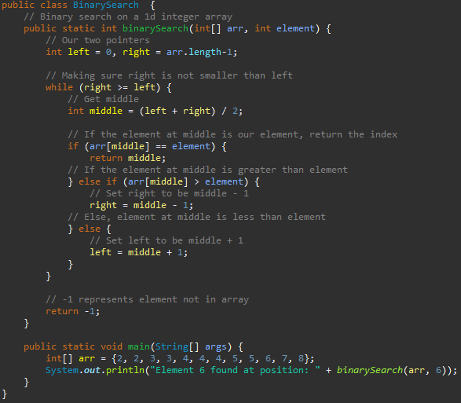

Sorting
Intro to Sorting
Binary search is quick and all, but it suffers from the problem of that the array needs to be sorted beforehand. So, how do programmers sort an array? Well, there are many, many different algorithms that can sort an array. This can range anywhere from basic sorting algorithms such as selection sort to more advanced ones like merge sort. Below are explanation of the sorting algorithms mentioned above.
What is Sorting Stability
Before we talk about the sorting algorithms, let's talk about a property of it. Stability is the property of whether elements of the same value appear in the same relative order in both the unsorted array and the sorted array. An algorithm is said to be stable if this does happen and unstable if it doesn't. This could be important to a programmer as these values may be tied to other values that need to remain in order.
Selection Sort

Selection sort is one of the most basic types of sorting. It constantly selects the smallest element of the unsorted portion of the array and swaps it with the first element of the unsorted portion of the array, until it reaches the end. But how do we know what portion of the array is unsorted? Well, it is easier to take a look at an example. If there is an array of length 10, when the algorithm first starts out, it doesn't know if any of the elements are sorted. Thus, it declares the entire array to be the unsorted array. It will then pick the smallest element within the portion (the entire array) to swap it with the first element. After the first swap, the algorithm now knows that the first element is in the correct position. Thus, the first element is now sorted and the unsorted portion becomes the portion between the second element and the last element. It will then repeat this until it determines that every element is in the correct position. Selection sort has an average time complexity of O(n^2) and is not a stable sort. This is because when swapping elements, it may send an element that was previously in front of another element of the value to behind it.
Binary Search
Another searching algorithm utilized by programmers is known as binary search. This sorting algorithm has a best case time of O(1) and an average and worst case time complexity of O(log n). Binary search works only on an already sorted array. The following explanation assumes that it is sorted from lowest to greatest. Binary search works by having two pointers that start out pointing to either ends of the array, the left and right pointer. It then checks the middle element between the two pointers. If the element is the target, we return the position. If the element is larger than the target, then we know that the target is left of the element. Thus, we would narrow down our pointers to be the left and the index of the middle - 1. On the other hand, if it was smaller, then we would narrow down our pointers to be the index of the middle + 1 and right. We would constantly do this until we found our target. If the right pointer, at any time, becomes smaller than the left pointer, then we must know that the target is not in the array. Binary search has the advantage that it is much faster than linear search. However, it also suffers from the drawback that the array must be sorted beforehand, or else it won't work. Below is an implementation for an integer array that returns the index.